Work Order Tutorial
This is a step by step tutorial on how to fill out a Work Order and take it through to a sale.
Getting Started with Work Orders
Create a new Work Order
-
On the Main Menu, in the Work Orders section, click the New Work Order button.
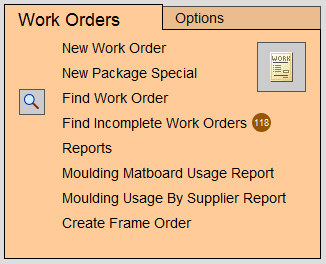
-
A dialog box appears asking you to choose artwork's orientation.
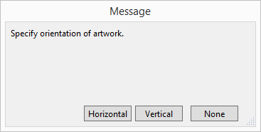
-
Click the Horizontal button.
An empty, ready-to-go Work Order appears.
Note: between the Width and Height labels, is a small rectangle showing the orientation just selected. This is called the “Orientation icon”. You can use this icon to change the orientation or swap the opening measurements.
Enter Measurements
-
Your cursor is now blinking in the Width field.
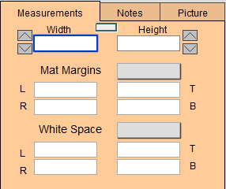
Type 22 1/4 (or 565 mm for metric) and then press Tab on your keyboard. -
The cursor moves to the Height field, next type 16 1/2 (or 424 mm for metric).
-
Next, enter the mat margins to be used in this framed piece. You could tab through the fields and type them in individually or you can use the rapid entry feature and enter all four at once.
Click on the grey box for the Mat Margins pop-up menu and select 3 1/4 (or 90 mm for metric). This is the total amount of both matboards used in this design.
This populates the left (L), right (R), top (T) and bottom (B) mat margin fields automatically. -
If your piece is a limited edition print and requires that some of the white paper around the print be shown, then select the amount of white area to appear by using the grey White Space pop up menu.
The total inside dimensions of your piece appear below the white space area in bold.
The numbers in grey are the outside dimension and are automatically adjusted when the frame is entered.
Enter Materials
-
Click the Frame1 search button (magnify glass icon).
-
The search dialog box appears.
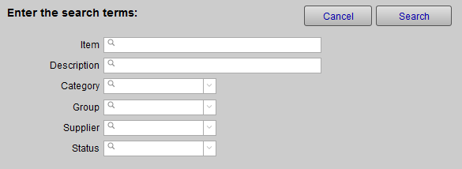
-
In the Item field, type 55 and then click the Search button.
The more numbers you type into the field, the tighter the search for the moulding you want to find.
-
A list of all possible matches of moulding numbers, starting with the number 55, appears.
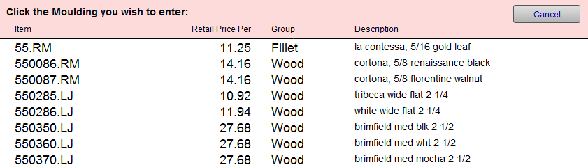
-
Click one of the moulding numbers in the list.
-
The moulding number, description and calculated price now appear on the Work Order screen.
Notice that all moulding numbers have a suffix to identify the moulding company, for example, .LJ for Larson Juhl. Matboard numbers have a prefix to identify the company, for example B for Bainbridge, C for Crescent, etc. -
Click in the Mats field and type in C1561 then press the Tab key (or use the search button to find a different matboard).
The description of the matboard and the price are automatically entered. -
With the cursor now in the next matboard field, type in B8425 and again press Tab.
The description and price appear. -
FrameReady needs to know how far to space the two mats: so a message in red text appears in the grey Message/ALERT box in the center of the screen asking you to Specify Mat Margin Values.
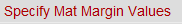
-
To the right, of the Description of this second mat, is a grey pop-up menu. Click it and choose 1/4 (or 6 mm for metric) as the amount of the reveal.
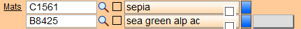
The Message/ALERT box clears.
Note: you can set FrameReady to automatically enter a default reveal.
See “Set Default Mat Reveals”
Adding More Details
-
The next series of fields are drop-down lists where you simply select an item.
-
Each list can be customized to contain only the items that you offer. The wording can be changed to reflect the terminology used by your store. These changes must be made in the Price Codes file.
-
Click in the Mat Design field.
-
A drop-down list appear showing all possible design selections.
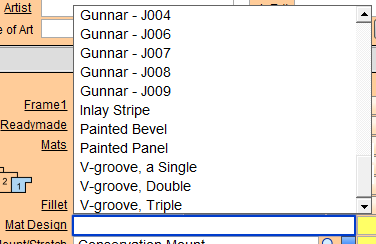
Note: FrameReady may be programmed to interface with a computerized mat cutter. If a CMC is used, then this step would be bypassed.
-
Scroll through the list and click V-groove, a Single .
The cursor automatically tabs to the next field - Mount/Stretch.
However, at this point you may want to select where the v-groove is to be situated on the mat.
To the right of the Mat Design field is a pop-up menu (grey rectangle) where you can specify a measurement. The measurement may refer to either the outside edge of the mat or the inside edge, depending on the terminology of your shop. -
Click in the Mount/Stretch field and choose the mounting option your customer desires, for example Full Conservation.
The item and price appears.
Tip: If you wish to add several mounting items, then click the underlined Mount/Stretch. A detail view appears and you can enter up to four items for Mount/Stretch. Click Done to return back to the Work Order.
Note: Clicking any underlined word on the Work Order screen opens a detail screen where you have multiple entry choices for that particular component.
Tip: To move through the list more quickly, press on the letter key on your keyboard. This will short cut to all items beginning with that letter, e.g. press W to get to Wire Hanger.
-
If you wish to skip a field or component, then simply click in the next field.
-
In the Fitting (as in fitting charges) field, select Wood .
The moulding in this tutorial is wood. Select a Wood fitting charge for wood frames and a Metal charge for metal frames. -
In the Glazing/Fabric drop-down list, select Conservation Clear .
-
The next field is Other. You may type directly into the field or choose an item from the drop-down list.
The Other field is used to price on-the-fly items that not priced by size but by some other criteria. For example, Shipping fees determined by a courier, Calligraphy determined by how many letters, etc. If you select an item from this field, the price must be manually entered in the field to the right of “Constrain to 1” .
Now that we have entered all of the measurements and materials, notice that the total price has been calculated (top right corner of the screen). If the Work Order is for multiple quantities of the same item, then simply update the Qty field.
Enter the Artwork
-
Click the Artwork field (it's a button).
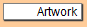
A pop-up menu appears for you to select the type of artwork which is being framed.
Tip: You may customize this menu by clicking the word Edit appearing at the bottom. For our example let’s select L/E Print.
Note: The artwork Category field is used for reporting purposes.
-
To the right of the Artwork field is the Title/Description field, enter the title of the artwork.
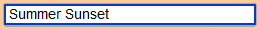
If the artwork doesn’t have a title, then type in a description, e.g. Summer Sunset. Whatever is typed into this field appears on the customer’s invoice as a description of the framed item. -
Select an Artist from the pop-up list.
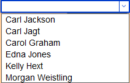
You can add an artist to the list by clicking the underlined word Artist. -
In the L.E.# field, type 128/500 .
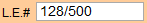
-
Click in the Condition field and select Rolled .
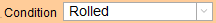
Tip: If you click back in the field, without selecting anything from the pop-up list, you can type whatever description you want.
Note: You can edit the Condition list by selecting Edit from the bottom of the list while in any work order.
-
Click in the Location field and select a location where the art will be stored before framing.
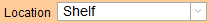
Tip: If you don’t use Bins, you can change it to drawers, or shelves or whatever you use. For now, let’s select Bin 4.
Enter a Customer
There are several ways of entering a customer on a work order (name, company, or phone).
To enter an Existing Customer
-
Click the pink Name button to search for a customer by first or last name or both.
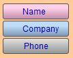
FrameReady searches both contact name fields and if more than one match is found, a list appears allowing you to pick the one.
Tip: If the customer's first name is Susan, you may want to enter just "Su" -- in case she has been entered as Sue instead of Susan. This also helps if the customer's name has not been entered correctly.
-
Click the blue Company button to search by company name.
Note: It is not necessary to type in the entire name. If the company name was Victorian Country Flowers, you could type “Vic Cou Flo” or just “Flower” or “Victorian” and be sure that it would find it.
-
Click the grey Phone button to search by a phone number.
Note: FrameReady is designed to search for any phone number associated with a customer. It is not necessary to include the 3 digit area code when using a 10 digit number.
To enter a New Customer
-
Click the New Customer button (sidebar button).
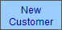
-
A dialog box appears.
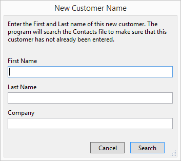
-
Enter the First and Last names of the new customer.
-
Click the Search button.
-
If FrameReady does not find an existing customer with that same name, then the New Contact screen appears -- offering more fields for data entry.
One of the things you may want to track is how a person heard about your business. -
Click in the Address field and enter the street address. Press Tab.
-
The cursor moves to the Zip or Postal Code field where you can enter in the appropriate information. Press Tab.
-
The cursor moves to the Phone field.
Although you can only see three fields on the screen, the scroll bar on the right allows you to view additional entries. -
There is also a dedicated Email field which may be used to send individual or bulk emails.
-
You can enter a variety of Keywords to build and track future advertising campaigns, interests and mailings.
Note: The Keywords feature is a great way to group your customers into selected mailing groups or keywords (e.g. needleworker, new home owner, etc.).
-
Click the Done button.
All the relevant information shows on the Work Order screen and is automatically stored in the Contacts file.
Shop Management
Two tabs appear at the top of this block; Order and Shop. This is the last block of information that you need to deal with to keep you informed on what is happening in your business.
-
In the Order tab, enter the name of the person who took the order in the Order Taken By field.
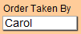
Tip: You may customize this menu by clicking the word Edit at the bottom and enter all your employees names.
Note: This area shows today's date, the due date (based on the set up data information), and the status. The Estimate button can be used to take the order out of the incomplete list and therefore off your vendor order.
-
Open the Shop tab. Note that all Work Orders are automatically marked as incomplete when they are created.
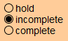
A Work Order is not marked as complete until it is framed and ready for the customer to pick-up.
The hold radio button is used when you have the artwork (and the sale) but do not want to order supplies yet (perhaps because the customer has not finalized their choices for framing).
Print the Work Order for the Framer
-
Click the printer icon at the top of the screen.
OR
Click the Print This Customer's Work Orders sidebar button
OR
Click the Print Documents sidebar button and then click either the This Work Order button or All [customer's name] Orders button.
-
A print preview of the document(s) appears.
-
Click Save as PDF or the Continue button.
-
The printer dialog box asks to Cancel or Print. Click Print.
Track Orders: Which are not yet completed?
-
Click the List of Incomplete Orders button.
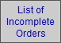
-
A list of all Work Orders which need to be completed appears, sorted in the order they were created. You may sort them by a different criteria using the Sort button, or click the underined column headings.
-
This list can be printed using the Print List button.
-
In the list, you can see a bar with your customer's name on it. Clicking on that bar takes you directly to that Work Order. You should now be back in the Form View of the order we started.
Take a Payment
Now that you have filled in the information on the work order you may wish to take a payment from your customer.
-
On a Work Order, click the Post to Invoice sidebar button.

-
A dialog box asks you to Print a Customer Summary or Post To Invoice.
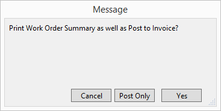
-
Click Post Only.
-
The line item entry screen appears.
You will see your Work Order(s) listed. -
Click the Enter a Payment button.

-
The Receipts window appears.
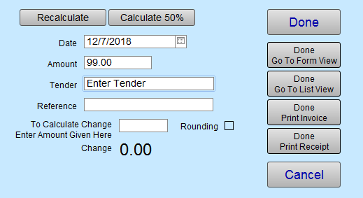
-
First thing, choose the payment type (Tender field).
-
If the customer is paying less than the balance, then enter that amount by clicking in the Amount field.
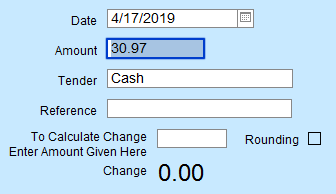
-
Click the Done Print Invoice button.
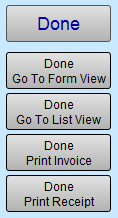
How to Track Customers
All the information we have just entered has been automatically recorded in the Contacts file.
-
Click the Contacts icon (two heads) at the top of the screen on the Navigational Palette. This takes you directly to the Contacts file and the record for the customer named on the Work Order.
-
Open Invoices/Rewards tab and find the invoice you just created. You can go directly to that invoice by clicking the blue Go button at the end of the row.
-
Open the Work Orders tab and find the Work Order just created. You can go directly to that Work Order by clicking the orange Go button at the end of the row.
-
Open the Artists tab. The artist’s name has been automatically entered onto the customer’s record. This way you can track your customer’s favorite artists.
-
Open the Keywords tab. Any marketing information, preferences or mailing designations you entered have been automatically entered onto this record.
At the End of the Day
Close FrameReady
-
When closing FrameReady at the end of the day, always remember to choose the File menu > Exit (Windows) or Quit (Macintosh). This ensures that all files are closed properly and helps avoid damaged files.

-
It is strongly recommended that you back up your files on a regular basis after closing the program. A little prevention goes a long way toward security.
Tip: It is strongly recommended that you close FrameReady on a regular basis as some back up solutions will not back up files that are open.
Warning: It is strongly recommended that you back up your files on a regular basis after closing the program. A little prevention goes a long way.
© 2023 Adatasol, Inc.